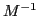
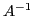

In the simulation of railway vehicles dynamics, the interaction between the vehicles' wheels and rails attracts a lot of interest. It involves the solution of the so-called contact problems, concerning the normal and tangential tractions on the inter-surface. The formulation based on Kalker's variational half-space approach is regarded as an accurate model for contact problems, particularly those involving a rolling contact with friction. Fast solvers are demanded for such problems.
In this talk, multigrid methods are used to solve the discretized
governing system, which is derived from an integral equation and its
coefficient matrix  is full, symmetric and Toeplitz. A smoother is
proposed, which is based on the Richardson iteration, where the residual
in each iteration is preconditioned by a matrix
is full, symmetric and Toeplitz. A smoother is
proposed, which is based on the Richardson iteration, where the residual
in each iteration is preconditioned by a matrix

. The idea of constructing this matrix comes from the fact that each column of the inverse of the coefficient matrix
is similar, and we approximate any one of these by a fast Fourier transform (FFT) technique. The resultant vector defines a Toeplitz matrix which is the preconditioner .This smoother possesses the advantages of easy construction, and fast computation of matrix-vector multiplications using FFT. It is able to eliminate the high frequency modes of the errors to a great extent, however, it also enlarges several very low frequency modes. This is remedied by a subdomain deflation approach, where only a few piecewise-constant deflation vectors are required.
The numerical tests and some spectral analysis indicate very fast convergence and mesh-independence of our method. Hence this method may accelerate the solution procedure for the contact problems. In view of other applications, on the one hand, it can be applied for systems with Toeplitz coefficient matrices arising in other engineering fields such as image processing. On the other hand, a preconditioner based on these techniques also performs well in combination with Krylov subspace methods aiming at even faster convergence.